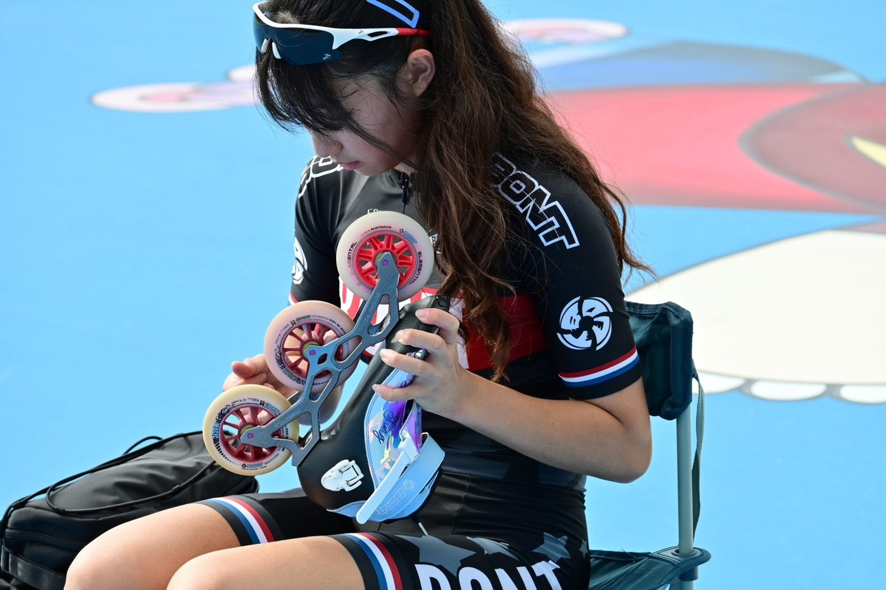
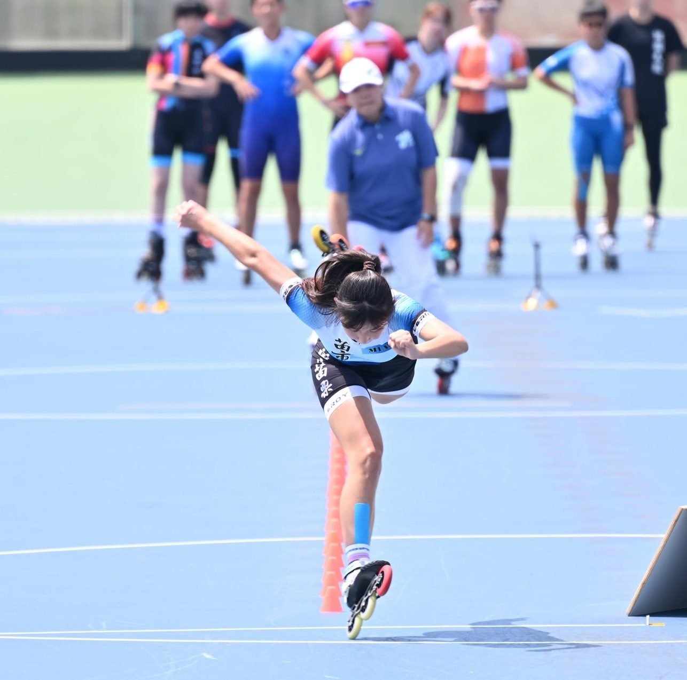
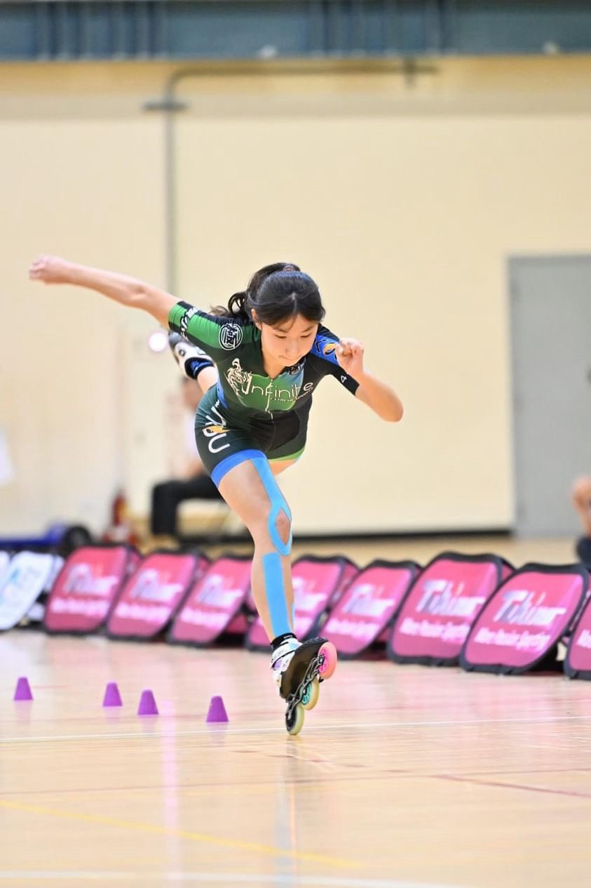
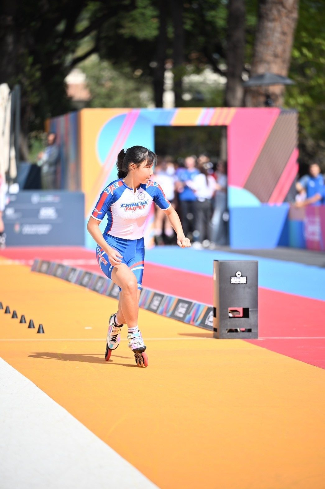

01我的故事
滑輪與速度之間逐夢：一位國手的成長故事
我目前就讀國立臺南大學體育學系一年級，主項為滑輪溜冰自由式速度過樁。從接觸滑輪開始，我便持續在技術與體能上突破自己，高中與大學階段皆透過田徑訓練作為滑輪能力的輔助，讓自己在技術與體能上不斷精進。長年專注投入自由式速度過樁訓練與競賽，並於 2024、2025 年連續兩年入選滑輪溜冰國家代表隊，累積國際賽事經驗，挑戰成年組競技舞台。
在訓練與比賽的路上，父親長期陪伴我練習，裝備、補給與出國參賽的費用皆需自行負擔。這些現實壓力曾讓我感到徬徨，卻也讓我更加珍惜每一次站上賽場的機會，努力挑戰自我。每一次站上賽場的瞬間，都讓我感受到汗水與努力的價值。
因為熱愛這項運動，我選擇持續投入與堅持。在高強度訓練與賽事中，我學會傾聽身體、調整狀態，也逐漸建立穩定的比賽節奏與心理素質。每一次訓練與出賽，都是累積實力的過程，也讓我在競技表現與自我成長上，看見一步步前進的自己。



